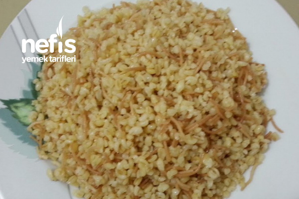

Bulgur Pilavı Tarifi

Kolay ve Hızlı Bulgur Pilavı
Çok kolay ve kısa sürede hazırlayabaileceğiniz lezzetli
bu pilav tarifi için sadece bitkisel yağ, tel şehriye, bulgur,
tuz ve baharat yeterli. Su yerine tavuk suyu, kemik suyu veya et suyu kullanılabilir.
İçindekiler
- 2 Su bardağı Bulgur
- 1 Su bardağı Tel Şehriye
- 3 Yemek Kaşığı Zeytinyağ
- 4 Su bardağı Su
- 1 tatlı kaşığı Tuz
- 2 çay kaşığı Karabiber, Pulbiber, Kekik
Hazırlanışı
- Tel şehriyeyi yağda kızart
- Tel şehriye rengi değişince bulguru ekle ve karşıtır
- Suları üzerine ekle ve karştır
- Tuz ve Baharatları ekle ve karştır
- Tencereyi kapat ve kısık ateşte pişmeye bırak
- Suyu bitince tencereyi ateşten al
- Tencere ile kapağı arasına havlu kağıt koyup 15 dk dinlendir
- Servise hazır